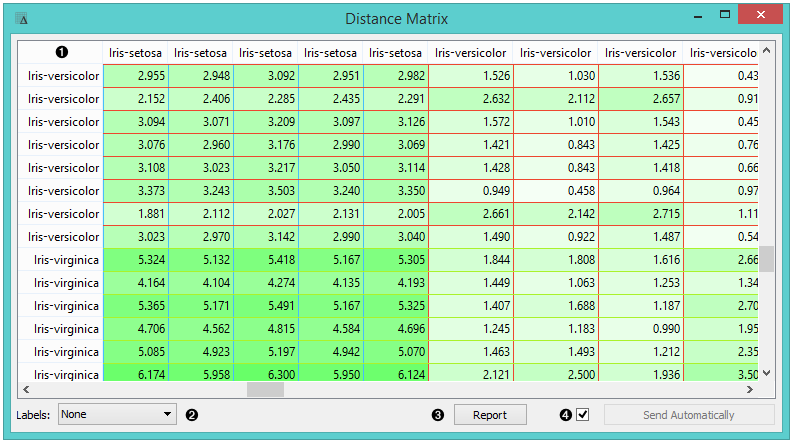
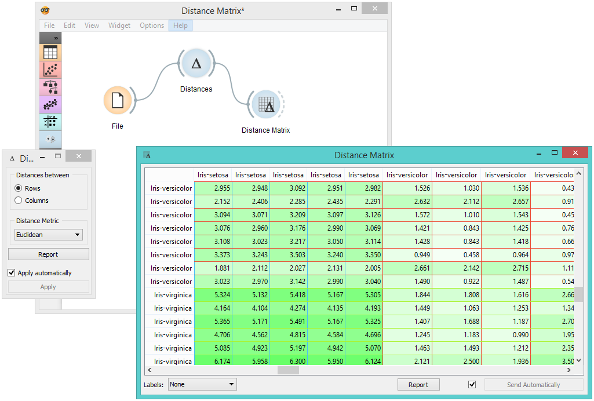

Distance Matrix
Visualizes distance measures in a distance matrix.
Inputs
- Distances: distance matrix
Outputs
- Distances: distance matrix
- Table: distance measures in a distance matrix
The Distance Matrix widget creates a distance matrix, which is a two-dimensional array containing the distances, taken pairwise, between the elements of a set. The number of elements in the dataset defines the size of the matrix. Data matrices are essential for hierarchical clustering and they are extremely useful in bioinformatics as well, where they are used to represent protein structures in a coordinate-independent manner.

- Elements in the dataset and the distances between them.
- Label the table. The options are: none, enumeration, according to variables.
- Produce a report.
- Click Send to communicate changes to other widgets. Alternatively, tick the box in front of the Send button and changes will be communicated automatically (Send Automatically).
The only two suitable inputs for Distance Matrix are the Distances widget and the Distance Transformation widget. The output of the widget is a data table containing the distance matrix. The user can decide how to label the table and the distance matrix (or instances in the distance matrix) can then be visualized or displayed in a separate data table.
Example
The example below displays a very standard use of the Distance Matrix widget. We compute the distances between rows in the sample from the Iris dataset and output them in the Distance Matrix. It comes as no surprise that Iris Virginica and Iris Setosa are the furthest apart.
